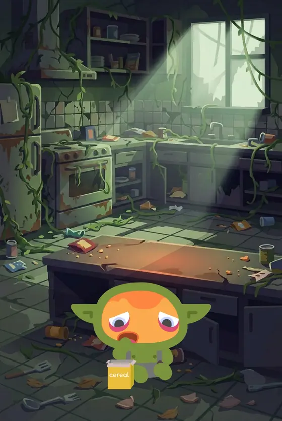
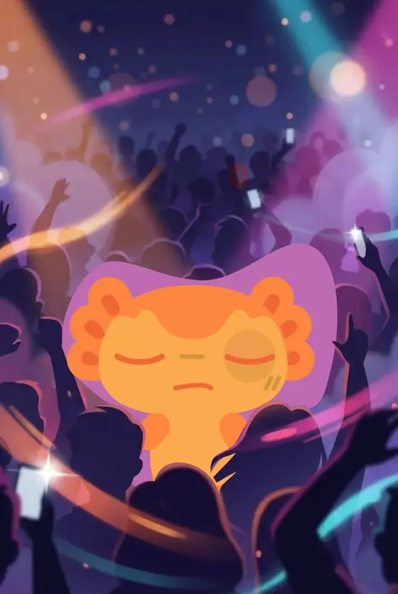
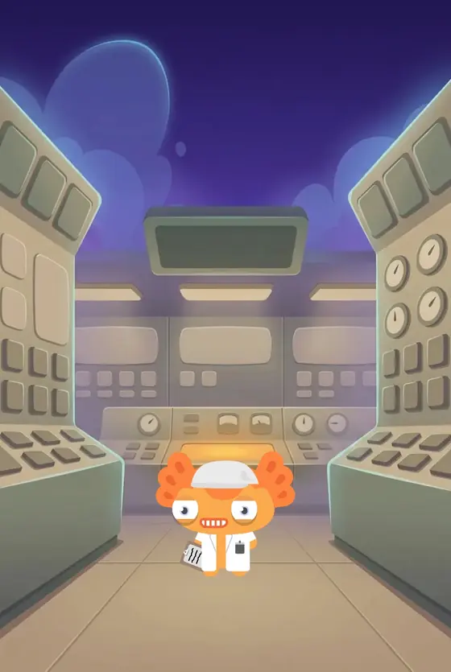
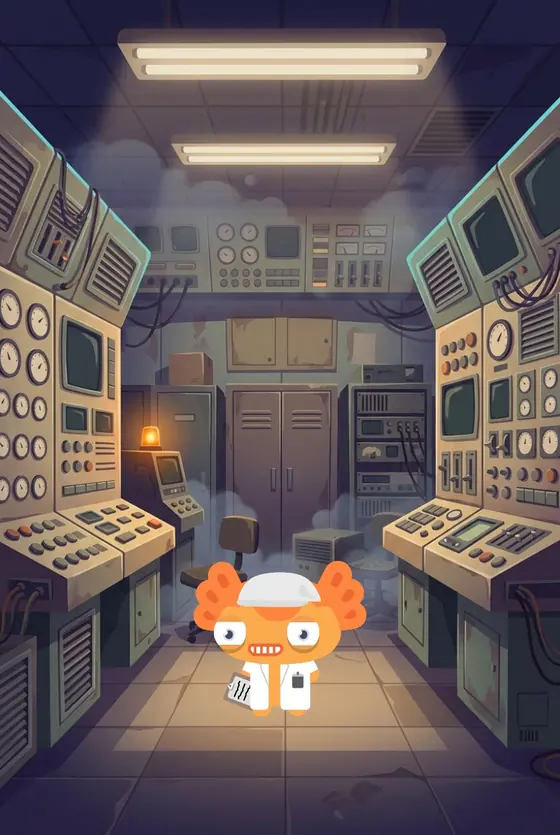
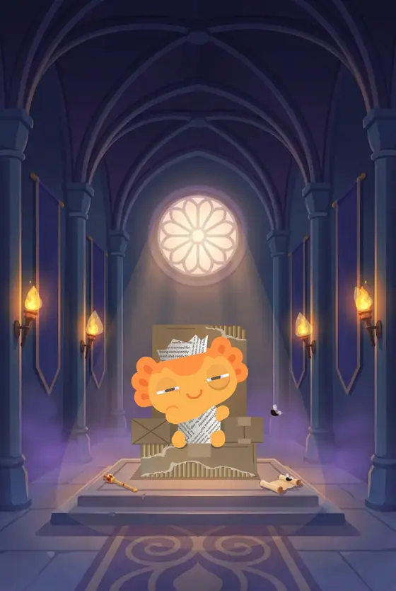
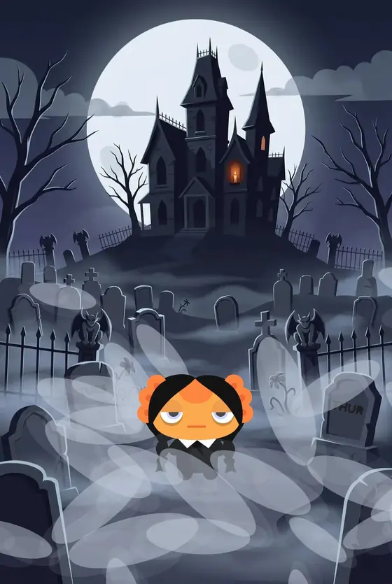
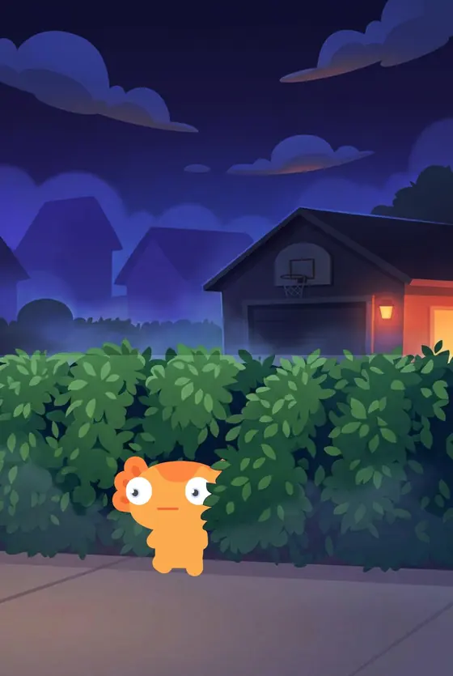
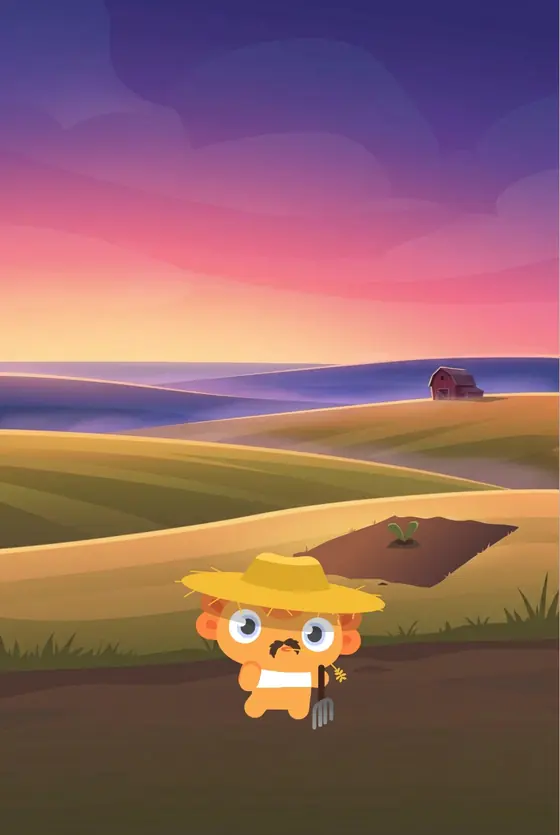

Today's pull
Every morning mints one card.
Tap to pull today's card
Apoyü, on
A demo pull from the launch deck, the same cards the app ships with. Your own card is minted from your own night.
The daily loop
How hard should you go today?
No dashboard to decode. One call, one card, one small thing in the evening.
01
The call
EaseTake the edge off today.
Training load is running well over your normal week.
02
The card
That day becomes a card you keep. Goblin Mode Activated, Uncommon, on Dirt.
03
The dare
“Take a 15 minute walk today.”
In the evening Apoyü asks for one small thing. Keep it and Apple Health confirms it, then Apoyü has something to say about it in the morning. Miss it and nothing is said at all.
The collection
53 cards in the launch deck.
You will not know which one you are getting tomorrow.

Turn the lights off
Goblin Mode Activated

Pilot Ejected

Not Great, Not Terrible

Bare Minimum Monarch
This Is Absolutely Fine

Wednesday Already

Witness Protection

It Ain't Much but It's Honest Work
- Comfort
- the material. Cloud on your best mornings, Concrete on your worst.
- Archetype
- the world. What actually happened that day.
- Rarity
- the finish. How remarkable that particular mint was.
Three independent channels. A rough morning can still mint something remarkable.
Common · Clean surface
Uncommon · Polished edge
Rare · Localized refractive foil
Legendary · Prismatic laminate
What leaves your phone
Your night stays yours.
Your individual readings never leave your phone. Apoyü works out your score on the device. Only the day's results, like your score and a short summary of the night and of each workout, are saved to your private account. The AI services that help write your brief see those daily results and your first name, never your individual readings.
Raw readings stay on device
No ads, no trackers
Never sold, never used to train models
Membership
Tomorrow already has a card.
Apoyü Membership keeps the mornings coming. Choose a yearly or a monthly plan. Both start with a 14 day free trial for eligible new subscribers, and the App Store shows you the price in your own currency before you subscribe.
If your membership ends, Apoyü moves into Archive Mode. Your cards, your Collection, your past mornings and the ability to share them stay yours. Apoyü simply stops making new mornings until you come back.
What you need
- An iPhone with Apple Health
- An Apple Watch, worn to sleep
- Ages 13 and up
Coming to the App Store.
Reasonable questions
Doesn't my Apple Watch already show me this?
The watch records. It does not decide. You still wake up to charts and the same question. Apoyü reads the night for you and answers it, one call with one reason, measured against your own baseline rather than a population curve.
I already wear a recovery tracker.
Then you already know the morning question. Apoyü works with the watch you own, so there is no second strap to charge. It is also honest at the door about what each wearable actually lets it hear.
Do I need a subscription?
Yes. Apoyü runs on Apoyü Membership, yearly or monthly, and there is no free plan. Both plans start with a 14 day free trial for eligible new subscribers. If you stop, everything you have earned stays yours in Archive Mode.
Will it work without my watch on at night?
No. Apoyü reads the night your Apple Watch records while you sleep, so it needs the watch on your wrist in bed. On a night with thin data, Apoyü tells you so instead of guessing.